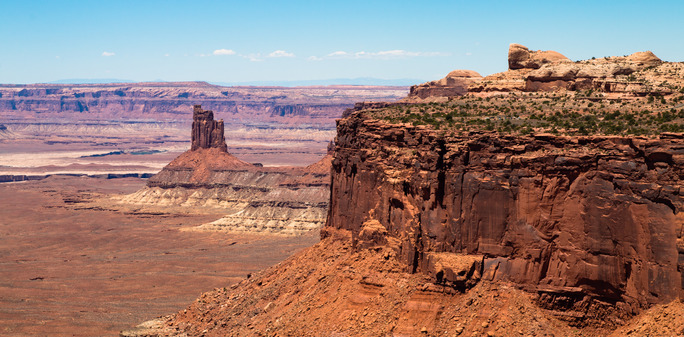
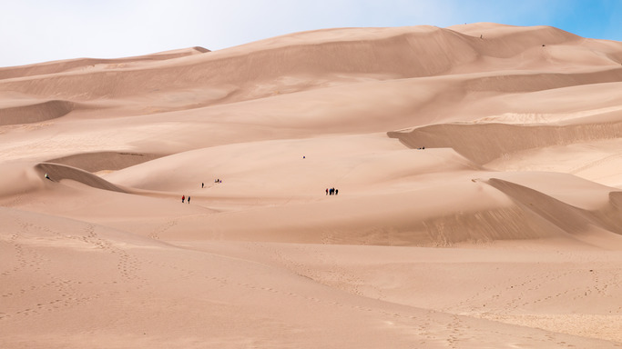
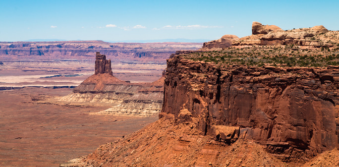
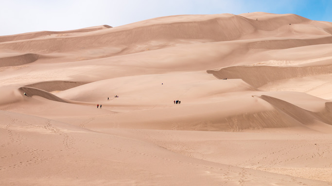
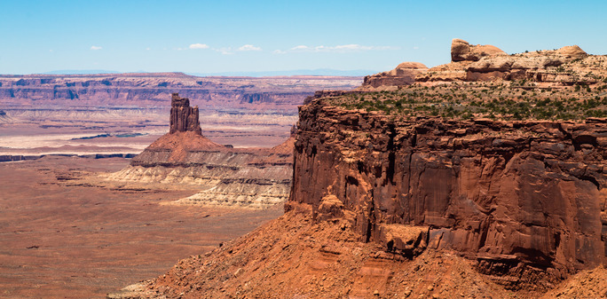
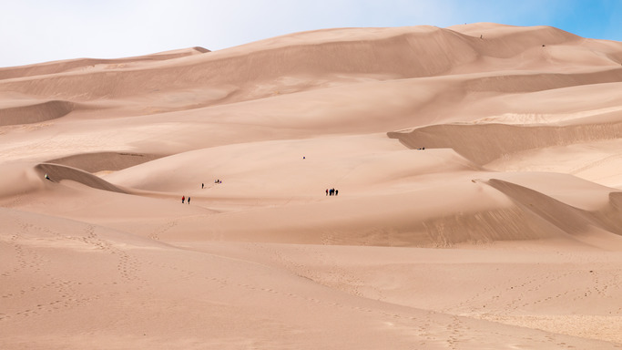

Images are an essential aspect of most websites. Let's get some practice manipulating them. In your assignment,
there will be a folder called images that contains a couple photos. We'll be using these to practice. It will
be important to use relative paths here, so look back at the slides if you aren't sure how to go forward.
All images have a src (source) attribute that holds the file path, an alt attribute that holds a description,
a width attribute specifying the width in pixels, a height attribute specifying the height in pixels.
All of your answers should go in the div with an id of "answers".
Create an image element using the file "angels-landing.jpg" from the images folder. It should have a width of 100 pixels and a height of 100 pixels. Look inside the file to see what it is for the alt attribute.
Create an image element using the file "olympic-np.jpg" from the images folder. It should have a width of 300 pixels and a height of 150 pixels.
Create an image element using the file "yosemite-valley.jpg" from the images folder. It should have a width and height of 500 pixels.
Create an image element using the file "canyonlands.jpg" from the images folder. It should have a width of 350 and a height of 700.
Create an image element using the file 'great-sand-dunes.jpg' from the images folder. Give the image element great-sand-dunes.jpg's resolution. Please open the image (outside of VS Code) to check the images resolution. You can do this by opening the image, right clicking the image to open the dropdown menu, then selecting the "file info" option. It will be on the left.
Create an image element with no source attribute at all. Give it a width and height of 250px. Remember to give it an alt attribute specifying what is going on in the image (nothing).

